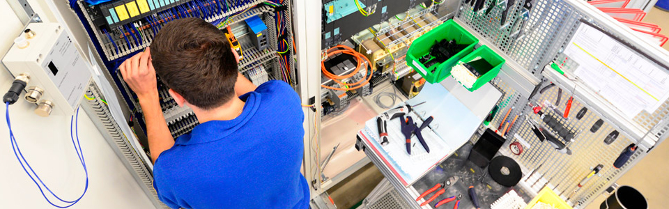
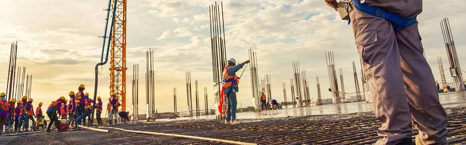
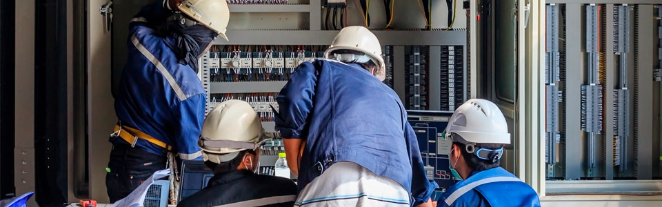

Наша компания предлагает следующие виды услуг
-

Сборка шкафов управления и автоматики
Быстро, качественно, под ключ.
Электромонтажные работы — это сложный процесс, который должен выполнятся квалифицированным персоналом, имеющим соответствующие знания и опыт.
Деятельность компании ВЭПС охватывает весь комплекс электромонтажных работ:
- Обследование и подготовительные работы
- Проектирование и согласование
- Монтаж и пусконаладочные работы
После окончания работ заказчик получает комплект исполнительной документации в полном объеме, согласно действующих норм и правил.
На работы и поставляемое оборудование действует гарантия от 24 месяцев.
-

Строительно-монтажные работы
Наша компания готова реализовать как готовые проекты, так и собственные.
- Установка технологического оборудования
- Устройство необходимых технологических трубопроводов
- Устройство систем вентиляции
- Электромонтажные работы по подключению оборудования
- Устройство и наладка систем автоматики
- Общестроительные работы
-
Проектирование объектов энергоснабжения
Наша компания готова реализовать как готовые проекты, так и собственные.
- Развитие энергосистем и расчетов режимов сети
- Подстанций 0,4кВ и входящих в них систем
- Инженерное проектирование электроснабжения
- Проектирование зданий и сооружений
- Проектирование предприятий различного функционального назначения и промышленных сооружений (ПС, КТП, РП и так далее)
- Общестроительные работы
-
Электромонтажные работы
Быстро, качественно, под ключ.
Электромонтажные работы — это сложный процесс, который должен выполнятся квалифицированным персоналом, имеющим соответствующие знания и опыт.
Деятельность компании ВЭПС охватывает весь комплекс электромонтажных работ:
- Обследование и подготовительные работы
- Проектирование и согласование
- Монтаж и пусконаладочные работы
-

Обслуживание оборудования
Поддержим в исправном состоянии ваше оборудование и с экономим на простоях производтва.
Зачем нам Сервис всё и так работает?
Подробно на этот вопрос отвечает эта статья, но все-таки стоит повториться. Сервис помогает оборудованию и дальше работать, минимизирую аварийные простои, а также время и стоимость ремонтов.
Рассмотрев, зачем нужен Сервис стоит разобраться а каким бывает это сервисное обслуживание. Обычно рассматривается три вида обслуживания: постоянное, по графику и выездное.
Постоянное обслуживание подразумевает присутствие сервис-работника на производственной площадке постоянно или достаточно часто, целью такого обслуживания является:
- устранения неисправностей при отказе оборудования;
- плановое технического обслуживания (ТО) по графику;
- постоянный контроль за состоянием оборудования, его узлов и систем;
- оптимизации закупок расходных комплектующих и ЗИП.
Данная система позволяет:
- точно спрогнозировать отказы оборудования и скорректировать графики ТО и ППР (планово-предупредительного ремонта);
- заранее определить перечень работ и закупить комплектующие для ремонта;
- минимизировать аварийный простой оборудования;
- перейти к плановой периодической закупке комплектующих и расходных материалов от аварийных срочных закупок.
Не всегда Заказчику нужно постоянное присутствие на своей производственной площадке работников Сервисной службы, но при этом необходимо выполнять определённые работы. В таких случаях производится обслуживание по заранее согласованному графику. Для выполнения работ сервис-работник прибывает к Заказчику в согласованное графиком время с необходимым инструментом. Отдельно может быть согласовано обеспечение комплектующих для проведения ТО.
Данная система позволяет:
- осуществлять плановое ТО и текущие ремонты по графику ППР;
- определить заранее перечень работ и закупить комплектующие для ремонта;
- планировать технологические простои оборудования, вызванные необходимостью осуществлять плановые ТО и текущие ремонты;
- осуществлять проверку технологических параметров (натекание, глубина вакуума и т.д.) в строго регламентированное время;
- проводить дефектацию оборудования.
Возможно, Вам не нужно проведение ТО, но нужно быстрое реагирование при аварийных ситуациях, что делать тогда? Ответ прост, Вам нужно иметь договор о Выездном сервисном обслуживании.
Что это такое? В медицине кроме врачей существует Скорая помощь, которая и занимается тем, что быстро прибывает к заболевшему, качественно диагностирует его состояние и помогает вылечиться. Так вот выездное обслуживание — это скорая помощь Вашему оборудованию. Выездное обслуживание может быть различным, как согласованным заранее, так и по вызову. Время приезда специалиста согласовывается при согласовании договора.
Данная система позволяет:
- гарантировано и быстро получить квалифицированную диагностику оборудования;
- быстро устранять неисправности при отказе оборудования;
- оперативно реагировать на аварийные остановки оборудования.
Теперь каждый сам для себя может выбрать ту систему, какая ему необходима больше.